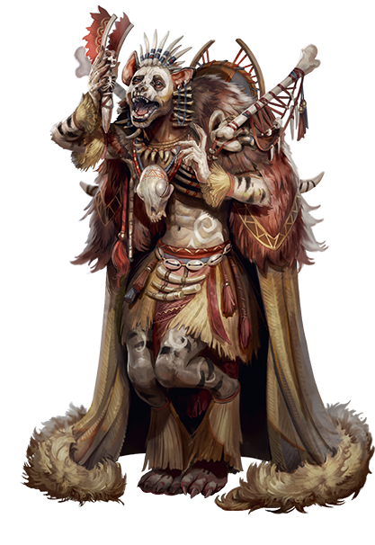

Adan Adan

- Given Name
- Adan Adan (used in full)
- Ethnicity
- Kholo
- Nationality
- Mwangi
- Age
- 44
- Gender
- He / Him
- Height
- 5′ 2″
- Weight
- 130 lbs
- Background
- Circuit Judge
- Mystery
- Bones
- Patron
- Nethys (mechanically registered; unnamed in life by Adan Adan himself)
- Alignment
- Neutral
I. Overview
Adan Adan is a 5th-level Kholo Witch Gnoll Oracle, set on the road as a Circuit Judge — a wandering arbiter of legal disputes carried, like the rains, from one settlement to the next. His mystery is Bones: the dead speak through him, and a curse for the privilege rides his every casting. He worships Nethys mechanically, though Adan Adan himself never named the god in life and credits his power to the dead rather than to any single deity.
At the time of the events recorded here, Adan Adan stood five-foot-two, weighed 130 pounds, was forty-four years of age, and dressed in fur, sinew, bone-fetishes, and a feathered cloak. He spoke softly in negotiation and laughed without warning. He carried a staff, a sling, and a small fortune of fifteen gold.
Low-Light Vision.
No languages are recorded on the character sheet; no traits, resistances, immunities, or active conditions are listed.
II. Ability Scores
Key ability for class DC: Strength, per Foundry export. Spellcasting key ability: Charisma (oracle default).
III. Combat Statistics
Defences & Core Values
Saving Throws
Strikes
| Weapon | Type | Proficiency | Notes |
|---|---|---|---|
| Staff | Melee | Simple (Trained) | Two-handed bludgeoning weapon. |
| Sling | Ranged | Simple (Trained) | Propulsive bludgeoning weapon. |
| Bite (Kholo) | Melee, unarmed | Trained | Granted by ancestry; piercing, jaws agape. |
Simple weapons: Trained · Martial weapons: Untrained · Unarmoured defence: Trained · Light armour: Trained.
Individual Strike attack and damage lines are not filled in on the Pathfinder character sheet. Weapons listed above are confirmed by Foundry inventory and ancestry data.
IV. Skills
Lore: Legal Lore (Trained, from Circuit Judge background). A second Lore line on the sheet is blank.
V. Ancestry & Heritage
Adan Adan's jaws are an unarmed strike, granted by Kholo blood.
Mechanical text of these ancestry feats is not reproduced here; consult the Pathfinder 2e Kholo (Gnoll) ancestry rules and the Witch Gnoll heritage entry.
VI. Class Features & Feats
Oracle Features
Adan Adan's mystery is Bones — death, decay, and the unquiet remains of the living. The Bones mystery grants the initial revelation spell Touch of Undeath, which is listed on the printed character sheet.
Spontaneous divine caster, key ability Charisma.
The Bones mystery exacts its toll in stages of cursebound effects whenever Adan Adan calls upon revelation magic.
Oracle Class Feats
Grants an initial domain spell from one of the Bones mystery's associated domains, cast as a revelation, and +1 to the focus pool. Domain selection not recorded on the character sheet.
Mechanical descriptions of these features and feats are not reproduced here; refer to the official Pathfinder 2e Oracle class rules.
VII. Archetype, Skill & General Feats
Archetype Feats
Adan Adan has taken the Familiar Master archetype. No familiar is listed by name on the character sheet.
Background & Skill Feats
General Feats
Mechanical descriptions of these feats are not reproduced; refer to the official Pathfinder 2e rules.
VIII. Spellcasting
Divine — Spontaneous. Cantrips are cast at the highest available spell rank. Spells listed below are taken from Foundry export and the player's repertoire screenshots.
Spell Slots per Day
| Cantrip | 1st | 2nd | 3rd |
|---|---|---|---|
| 3 | 3 | 3 | 2 |
- Detect Magic
- Stabilize
- Guidance
- Read the Air
- Torturous Trauma
- Invoke True Name
- Chill Touch
- Fear
- Harm
- Command
- Comprehend Language
- Dispel Magic
- Fear (heightened)
- Remove Fear
- Harm (heightened)
- Life Pact
- Rouse Skeletons
- Fear (heightened)
- Harm (heightened)
Innate Spells
Focus Spells
Listed on the printed Pathfinder character sheet's Focus Spells block. It is the Bones mystery's initial revelation spell, but does not appear in the more recent Foundry focus-spell screenshot. Retained here for completeness.
Three Fear entries and three Harm entries appear in the Foundry export, signifying the spell is in the repertoire at multiple ranks (signature spell behaviour). Spell mechanical descriptions are not reproduced here.
IX. Inventory
Worn & Wielded
| Item | Qty | Notes |
|---|---|---|
| Leather Armor | 1 | Worn. |
| Staff | 1 | Wielded. |
| Sling | 1 | Carried. |
Carried Equipment
| Item | Qty | Notes |
|---|---|---|
| Grim Sandglass | 1 | Equipment. |
| Persona Mask | 1 | Equipment. |
| Demon Mask | 1 | Equipment. |
| Corpse Compass | 1 | Equipment. |
Consumables
| Item | Qty | Notes |
|---|---|---|
| Healing Potion (Minor) | 1 | Consumable. |
| Mesmerizing Opal | 1 | Consumable. |
| Potion of Expeditious Retreat | 1 | Consumable. |
Currency & Bulk
The Pathfinder character sheet records the bolt of cloth taken from the contested warehouse as already sold off; the gold above reflects the proceeds and prior funds. Encumbered at 6 Bulk; Maximum 11 Bulk. The PDF sheet lists Adan Adan as Unarmored — the Foundry export, used here, has Leather Armor worn.
X. Chronicle of The Slithering
What follows is an account of Adan Adan's recorded actions during the campaign known as The Slithering, from his first commission through to his death in the Archive of the Sun. Other adventurers are mentioned where they intersect his story; this is Adan Adan's record.
-
Commission · The Contested Warehouse
Adan Adan came to the warehouse to assess the property and adjudicate its ownership on behalf of Councilwoman Abayon Moonmay. He travelled in company; not all of his companions survived the work.
Adan Adan collected a bolt of cloth from the treasure room as payment-in-kind, and afterward sold it — though there was reason to suspect the bolt was stolen goods. He reported back to Abayon Moonmay. She felt some guilt over the deaths of the others. Adan Adan, for his part, did not.
-
Session of 29 May · Return to the Warehouse
Someone had been to the warehouse since the last visit. Adan Adan and his companions encountered thieves on the site. Adan Adan instructed the thieves to cede their claim; they attacked instead. The thieves' leader was killed — and the corpse changed, dissolving into what appeared to be a rust ooze (a slime typically found where industrial or urban pollution has saturated the ground). The remaining thieves fled, believing Adan Adan and the others had cursed their boss.
In the wreckage Adan Adan recovered a map and several gemstones. The gemstones bore the residue of some prior suspension, as though they had once been steeped in a liquid to amplify their magic; that liquid had since dried. Exposed and dry, the gems were judged safe. For now.
A document was recovered relating to a shipment from Oenopion in Nex to one Tomil Jabrin at the Khalibi Caravan House in Kibwe. Its key passage read, in Adan Adan's transcription:
Recovered Correspondence"Beware, Tomil. As the stones steep in their brew during the long trip to Kibwe, they gain power. How much power, I do not know; the curse might intensify enough that it is not limited to those who contact the stones, but could perhaps become transmittable by touch or even proximity."
-
Inquiries · Tomil & the Cursebreaker
Adan Adan asked after Tomil Jabrin. People were very unwilling to speak of him; they did not know, or did not wish to know.
Adan Adan and his companions spoke to Councilwoman Abayon Moonmay about the curse on the stones. She gave them a key to the Archive of the Sun and a token granting entry. A Nexian emissary, intrigued by the shipment's origin, presented Adan Adan with a Diplomat's Badge.
Inside the Archive of the Sun stood a Cursebreaker Statue. It did not activate. Adan Adan did not know why.
-
The Archive of the Sun · Death
Adan Adan entered the Archive of the Sun in the company of Nucifera — sole other survivor of the earlier work — and three new arrivals: Nandanu, a Venomshield Nagaji cleric of Nalinivati; Meli, a Sacred Nagaji thaumaturge of Isis; and Dor Korn, a Hold-Scarred Orc warrior. (A fourth, Farbolt, was absent.)
Within the Archive they fought frog-people, a basilisk, and a lizard.
Adan Adan died walking up a staircase, triggering a poison dart trap. He had been to all the right places, asked all the right questions, and survived all the wrong fights, and was killed at last by an unattended mechanism on an ordinary set of stairs.
Adan Adan's Open Questions
Adan Adan kept a running list of matters he had not resolved. They are reproduced here without answers, because Adan Adan did not live to find them.
- Was the bolt of cloth he collected — and sold — actually stolen?
- Was the bolt of cloth, or any of the warehouse's contents, brought from Zatriba, or taken from Zatriba?
- Who exactly is Tomil Jabrin of the Khalibi Caravan House in Kibwe, and why does no one in this city wish to speak of him?
- Will the curse on the stones intensify with steeping, and become transmissable by touch or proximity, as the Nexian's letter feared?
- Why did the Cursebreaker Statue in the Archive of the Sun fail to activate?
Players in Adan Adan's Story
Abayon Moonmay — Councilwoman; commissioned Adan Adan to adjudicate ownership of the warehouse; later furnished access to the Archive of the Sun. Bore some guilt for the deaths suffered in her service.
The Nexian Emissary — Interested in the shipment from Oenopion; rewarded Adan Adan with a Diplomat's Badge.
Nucifera — Fellow survivor of the warehouse work; entered the Archive of the Sun with Adan Adan.
Nandanu, Meli, Dor Korn (and the absent Farbolt) — Late additions to the company; with Adan Adan and Nucifera at the Archive of the Sun.
The Thieves of the Warehouse — Refused to cede their claim. Their leader, on dying, became a rust ooze; the rest fled, believing themselves cursed by Adan Adan and his companions.
Tomil Jabrin — Intended recipient of the Oenopion shipment. Spoken of unwillingly, or not at all.
The frog-people, basilisk, and lizard of the Archive of the Sun, and finally an unattended poison dart trap on a staircase, which killed Adan Adan.
Character Note — Player Intent
The player noted an intent to lean further into the death theme of the Bones mystery — eventually treating Adan Adan as half-dead in flavour: harmed by positive damage, healed by negative effects, as if undead. This was a roleplay direction the player was pursuing rather than a finalised mechanical rule on the sheet, and it never had cause to be tested in play.